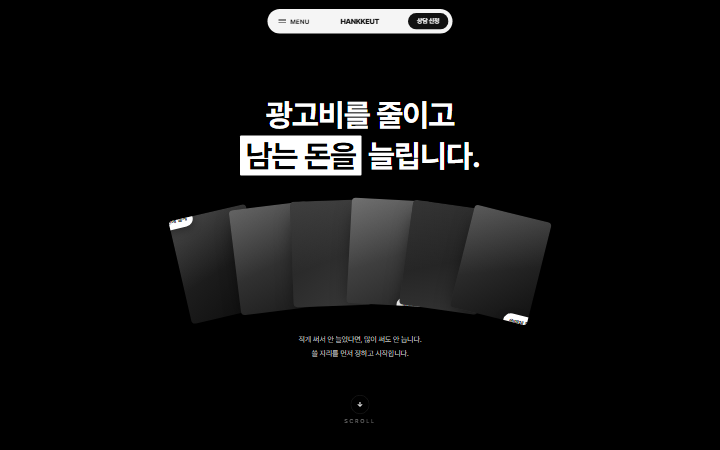

김대현
dinored960018@gmail.com
Art is to be free. Design is to fix
Ye
old
new

260923 Y-VISION
260922 LxL Creative
260922 White Desert
모작
창작
 260922 LxL Creative
260922 LxL Creative 260922 White Desert
260922 White Desert